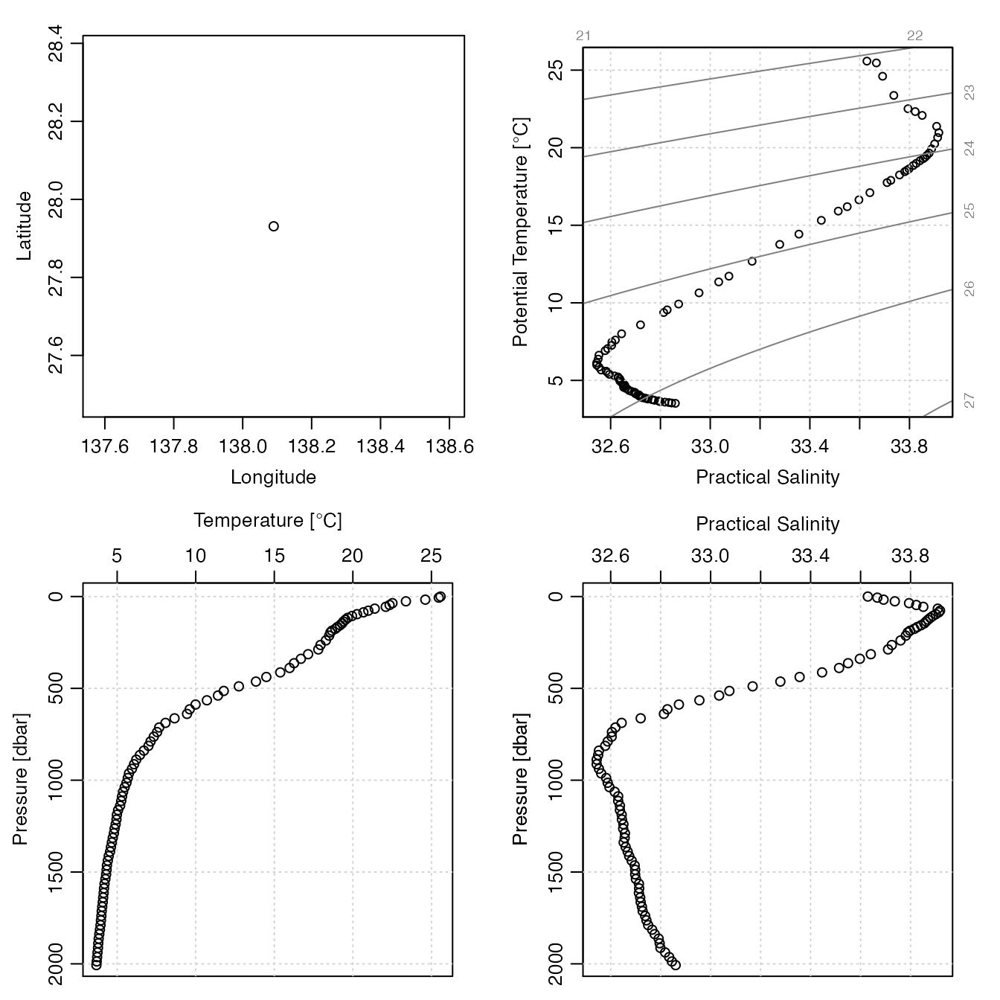

Get Data for an Argo Float Profile
getProfileFromUrl( url = NULL, destdir = argoDefaultDestdir(), destfile = NULL, age = argoDefaultProfileAge(), retries = 3, quiet = FALSE, debug = 0 )
| url | character value giving the URL for a netcdf file containing an particular profile of a particular Argo float. |
|---|---|
| destdir | character value indicating the directory in which to store
downloaded files. The default value is to compute this using
|
| destfile | optional character value that specifies the name to be used
for the downloaded file. If this is not specified, then a name is determined
from the value of |
| age | a numerical value indicating a time interval, in days. If the file
to be downloaded from the server already exists locally, and was created
is less than |
| retries | integer telling how many times to retry a download, if the first attempt fails. |
| quiet | logical value; use |
| debug | integer value indicating level of debugging. If this
is less than 1, no debugging is done. Otherwise, some functions
will print debugging information. If a function call fails, the
first step should be to rerun the function with |
A character value naming the local location of the downloaded file,
or NULL if the file could not be downloaded.
Dan Kelley
# \dontrun{ # These examples assume that the ~/data/argo directory exists. library(argoFloats) library(oce)#>#>#>#># Example 1: a particular file url <- "ftp://ftp.ifremer.fr/ifremer/argo/dac/nmdis/2901633/profiles/R2901633_071.nc" file <- getProfileFromUrl(url=url)#>#>lon0 <- -59.9149 lat0 <- 43.9337 dist <- oce::geodDist(index[["longitude"]], index[["latitude"]], lon0, lat0) w <- which.min(dist) url <- paste0(index[["metadata"]][["ftpRoot"]][1], "/", index[["file"]][w]) fileSable <- getProfileFromUrl(url=url)#># }